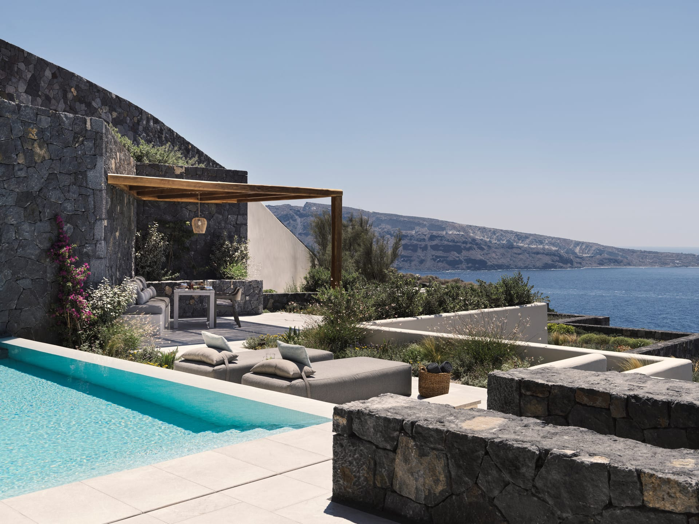
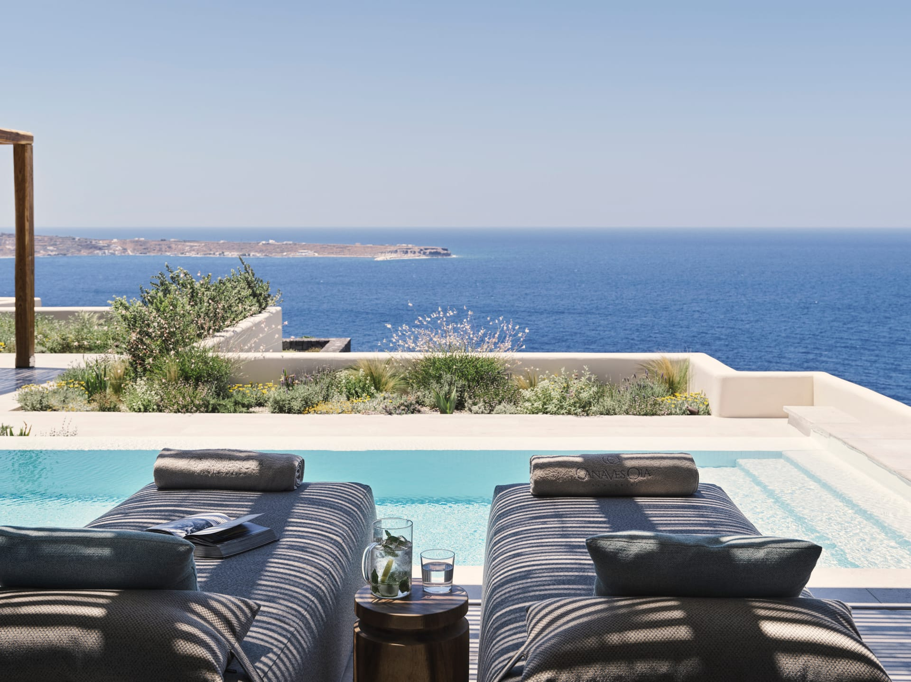
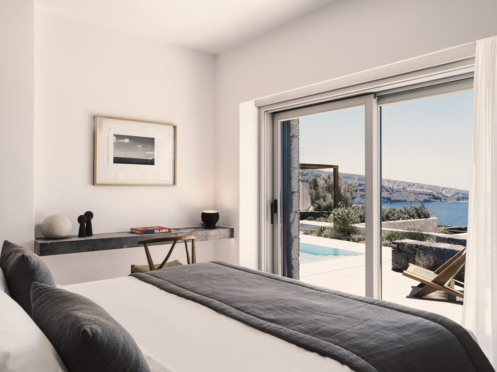
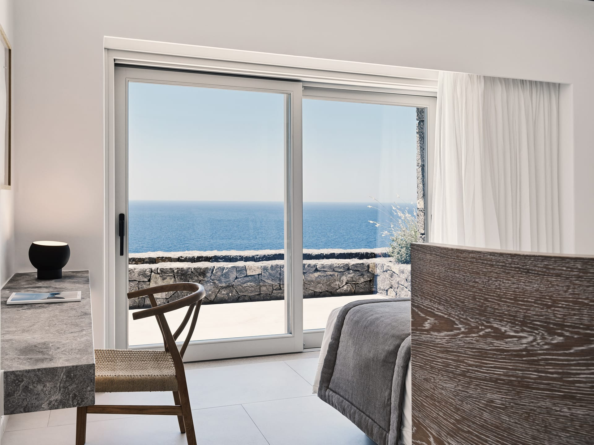

Santorini, Greece · Oia
Josh & Danielle · July 9, 2022
He didn't begin with a ring.
He began six months earlier — with a plan.
Every detail of July 9, 2022 was built deliberately.
Not one hour left to chance.
Preserved with intention · For the generations that follow
Friday, July 8, 2022 · Arrival
Eleven time zones. Three flights. A red-eye layover in Montreal. A turboprop from Athens on Sky Express GQ346, the island visible through the window before the wheels touched down. White and blue and unmistakable. Santorini.
The driver was waiting at arrivals. Sign in hand. Private VIP transfer — sixteen minutes of winding caldera road. And then the gate opened onto something extraordinary: Canaves Oia Epitome, Oia. Perched above the fishing town of Ammoudi. Volcanic stone. Natural materials. The only resort on the island offering sea and sunset views from every room.
Their suite: the Hideaway Pool Villa. Seventy square meters. King-size bed. Private pool. Open-air dining terrace above the Aegean. Josh had been carrying the ring for months. That first night was just dinner.
Sphinx Wine Restaurant, Oia. Rooftop terrace. Sunset view. 19:30 reservation. The kind of setting that makes any meal feel like a milestone. Later that evening, a letter arrived at the room — an invitation for a sunrise hike the next morning. She set it on the table. He had been thinking about it for half a year.




The night before, a letter arrived at the door.
She read it at the desk by the window, the lights of Oia still glowing outside. An invitation for a sunrise hike the next morning — the Oia to Fira trail. Nine kilometers along the caldera rim. Josh had written it like a suggestion. He had written five drafts before this one.
With the letter, a package. Designer sportswear, chosen specifically for her, folded and placed on the chair. Something to wear on the trail. A small, considered gift. The kind of detail that means nothing in isolation and everything in context.
She had no reason to suspect. The letter read like a proposal of a morning, not a life. It was, of course, both.
She was awake before the island.
The Oia to Fira trail begins in darkness and opens into something extraordinary as the sun lifts over the caldera. Nine kilometers of volcanic rock and wild flowers carved into the caldera rim. One of the most scenic paths in the world. She had no idea it had been prepared specifically for her.
Along the cliffside, tucked into the rock face at intervals, Josh had hidden small framed signs. Each one carrying a line from one of her favourite rom-coms. Lines she had quoted to him without ever knowing he was collecting them. A trail of love letters she could read with her feet.
Three hours. The sun rising over the Aegean the whole way. The trail ended at a private terrace above the caldera — a rustic bohemian breakfast waiting in the morning light. Wood platters, champagne, fresh flowers, Moroccan cushions. Somewhere nearby: a couple with cameras. Not strangers. The photographer and videographer hired months before, disguised as fellow hikers, capturing every second she laughed without knowing why.
On the beach, three chests were waiting.
Josh had placed them as a map of their story — where they had come from, where they stood at that exact moment, and where they were going. Not a gesture. An archive. Evidence of a relationship documented with intention.
The first chest held the past. Las Vegas tickets — back to the city where it began. Where they first chose each other, before anyone had a name for what they were building. The second chest held the present. A Cartier pearl necklace. Chosen for the woman she had become. The third chest looked forward. A custom artwork: Josh and Danielle, Greece in the background. Because this island would always belong to them.
By the time the third chest opened, she was certain the moment had arrived. The day would continue. There was always going to be more. That restraint is what made the ending matter.
The island that held the secret for six months.
The afternoon moved at a pace that only this island permits.
Massages arranged near the secluded beach. The kind that dissolve time entirely. The kind you only experience when someone has thought of everything first.
Then the wine tasting. Not ordinary bottles. Each label had been custom designed — photographs of Josh and Danielle printed on the glass. Names for each bottle drawn from places they had traveled together. The moments that quietly defined them as a couple before either of them would have used that word.
Then the boat. Out on the caldera water — volcanic walls rising hundreds of feet above the waterline. Moving slowly along the cliffs. And cut into the rock face above the waterline, a message arranged weeks in advance: I will not give up on you. Four words. The kind that never make it into photographs but stay with a person for the rest of their life.
Santo Wines. Pyrgos village, Santorini. The oldest and most respected wine cooperative on the island — founded by the island's own farmers, rooted in volcanic terroir that yields some of the most distinctive whites in Greece.
Their terrace sits above the caldera. Wine Enthusiast Magazine named it the best place in Santorini to taste wine while watching the sun descend over the water. Recommended is an understatement.
The Assyrtiko. The island's signature grape — grown in soil that hasn't seen rain in months, roots driving deep through volcanic ash to find moisture. Mineral. Precise. It tastes like the island looks.
The photographer was still close. Some of the most quietly extraordinary images from the entire trip were captured here — volcanic stone and golden afternoon light, the caldera spread out below, two people carrying a secret between them that was only hours away from becoming something permanent.
Back at Canaves Oia Epitome, a makeup artist knocked on the door.
The cover story: a sunset photoshoot was planned. Josh had also arranged dresses — choices waiting in the room, something elevated to match the evening. She had no reason to question it. It was exactly the kind of thing a trip like this called for.
They walked together to the iconic blue church domes of Oia. The photographer framed every shot. The afternoon light was exact. She was photographed for the last time before the story changed permanently.
What she didn't know: while she stood against Cycladic white-wash and blue dome, a team was at work at the proposal site. A large heart being assembled — pink florals, her favourite. Built floor to edge, bloom by bloom. Around the full perimeter, hundreds of candles and tealights being placed, one by one. A table set for the occasion. Musicians warming up to play one song. She was being photographed. He was watching the clock. The island was holding its breath.
Chapter Seven · Saturday, July 9, 2022 · Sunset
Pink florals. Candlelight. One question. Yes.
At sunset, Josh led Danielle to the proposal site.
She walked into the centre of a large heart. Thousands of pink florals — her favourite,
her colour, every bloom placed for this exact evening. Around the full perimeter,
hundreds of candles and tealights. Gold light across the terrace above the caldera.
Kygo's Unforgettable began to play. Live musicians. The song that had belonged to them
long before this night had a name for itself.
The photographer was positioned. The videographer was rolling at ground level.
A drone was above the island.
And Josh got down on one knee.
She said yes.
They toasted with champagne while the caldera glowed beneath them.
Had dinner under the Santorini stars for the first time as Josh and Danielle — engaged.
The kind of evening that doesn't need embellishment.
It needs only to be preserved exactly as it was.
For the generations that follow.
She said yes on a cliffside above the Aegean.Santorini, Greece · July 9, 2022
Pink florals. Candlelight.
A love that had been building since Las Vegas.